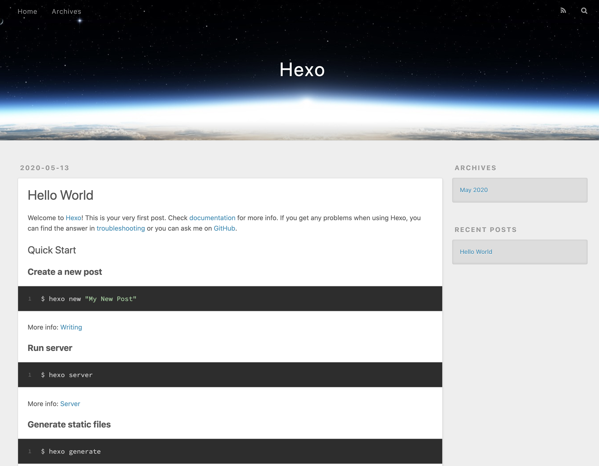

这是搭建博客以来第一篇文章，简单介绍一下博客的搭建方法。
Git安装及配置
检查是否已经安装Git:
1 | $ git —version |
如果出现具体版本号，表明已经安装过Git。如果没有，则从git官网下载安装，点击这里下载。
初次使用Git，需要在本地配置并且和Github完成连接。
1 | $ git config --global user.name "your_name" |
在上方的引号中设置自己的名字和邮箱，这样Github就知道是谁在提交代码了。
接着在本地生成SSH-key：
1 | $ ssh-keygen -t rsa -C "1234567890@qq.com" |
在引号中输入自己的邮箱，然后一路回车过去。这个key用于和Github绑定，以后commit时就不需要输入账号密码了。
到ssh目录下打开.ssh，找到生成的key：
1 | $ cd ~/.ssh |
里面存放着三个文件id_rsa、id_rsa.pub、known_hosts，其中id_rsa.pub为公钥，把里面的内容复制一下，一会儿会用到。id_rsa为私钥，保存在本地即可。
Github创建仓库并设置SSH-key
在Github官网注册账号。
点击右上角头像，找到Settings，在左侧选择SSH and GPG keys，选择New SSH key，看到下述页面：
在Title中起一个名字（比如My Computer），然后把刚刚的公钥内容复制到Key中，点击Add SSH key，GitHub会提醒你输入密码，输入后即完成了本地电脑和GIthub的绑定。
接下来我们需要创建一个GIthub仓库来存放我们的博客项目文件。点击右上角头像，找到Your Repositories，点击New创建一个新仓库，仓库名称为XXXX.github.io，其中XXXX为Github用户名，必须要一字不差。然后点击Create Repository，新的仓库即创建完成。以后所有的博客相关文件都会存放在这个仓库中。
Hexo安装及基本操作
Hexo是整个博客的精髓，之后不管是修改博客主题，配置博客页面以及上传新的博客，都需要和Hexo打交道。
安装Hexo：
1 | $ npm install -g hexo-cli |
在本地选定一个博客网站的文件存放位置，之后博客所有的文件都会存放在此目录下，我选择的是 ~/…/Blog/，进入（cd）到此文件夹并初始化Hexo：
1 | $ hexo init |
在此文件夹中会自动生成一套博客需要的文件。
启动本地服务器看看效果吧：
1 | $ hexo s |
在浏览器中输入 localhost:4000 查看博客预览。当然，目前的博客只能在本地运行，我们还需要把本地的相关文件推送到Github远程仓库（没错，就是刚刚创建的仓库），这样才能在网站上打开。
在本地博客文件夹中找到配置文件_config.yml，打开并找到deploy，修改为下述内容：
1 | deploy: |
把本地的文件上传到GitHub仓库了：
1 | $ hexo g -d |
现在，你可以访问 XXXX.github.io （XXXX为Github用户名）来查看自己的博客网站了。当然，以后也可以把网址设置为属于自己的域名。

当当当当，一个基本的博客网站就搭建完成啦。
如何写一篇新博客
目前，网站上只有一篇文章，还是Hexo帮我们自动生成的，那如何写一篇新的博客呢？
在博客的文件目录下：
1 | $ hexo new 'XXXX' |
其中XXXX为文章的标题。在/source/_posts文件夹下，可以发现多了一个.md文件，这就是我们新的文章啦。直接打开这个文件，用Markdown语法写完之后，就可以重新上传整个项目啦。
清理Hexo缓存并重新发布：
1 | $ hexo clean |
稍微等两分钟，再次刷新网站，就能看到新的文章已经在网站上生成啦。
至此，一个简单的博客网站就搭建完成啦。